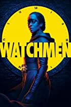

1.Chernobly
- Seasons: 1 season
- Rate: 9.4
- Creator: Craig Mazin
- Stars: Jessie Buckley, Jared Harris, Stellan Skarsgård
the story :
In April 1986, an explosion at the Chernobyl nuclear power plant in the Union of Soviet Socialist Republics becomes one of the world's worst man-made catastrophes.
2.Succession
- Seasons:3
- Rate: 8.5
- Creator:Jesse Armstrong
- Stars: Hiam Abbass, Nicholas Braun, Brian Cox
the story :
Succession follows a dysfunctional American global-media family.

3.Watchmem
- Seasons:1
- Rate:8.1
- Creator: Succession
- Stars: Regina King, Yahya Abdul-Mateen II, Tom Mison
the story :
Set in an alternate history where masked vigilantes are treated as outlaws, Watchmen embraces the nostalgia of the original groundbreaking graphic novel of the same name, while attempting to break new ground of its own.